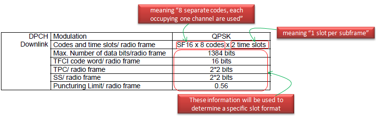

| RAB Overview - TDSCDMA |
|
The overall structure of Radio Bearer Configurtion for WCDMA and TDSCDMA are almost same. The major difference between WCDMA and TDSCDMA is physical layer (DPCH Uplink, DPCH Downlink). So in this page, I would describe mostly on physical layer configuration of TDSCDMA RAB. For the layers above the physical layer, refer to WCDMA RAB Overview and WCDMA R99 Radio Bearer.
Interactive or background / UL:64 DL: 64 kbps / PS RAB + UL:3.4 DL:3.4 kbps SRBs for DCCH

| | +-ul-DPCH-Info ::= SEQUENCE [1] | | +-ul-DPCH-PowerControlInfo ::= CHOICE [tdd] OPTIONAL:Exist | | | +-tdd ::= SEQUENCE [1] | | | +-ul-TargetSIR ::= INTEGER (0..62) [48] OPTIONAL:Exist | | | +-ul-OL-PC-Signalling ::= CHOICE [individuallySignalled] | | | +-individuallySignalled ::= SEQUENCE | | | +-tddOption ::= CHOICE [tdd128] | | | | +-tdd128 ::= SEQUENCE | | | | +-tpc-StepSize ::= INTEGER (1..3) [1] | | | +-primaryCCPCH-TX-Power ::= INTEGER (6..43) [12] | | +-modeSpecificInfo ::= CHOICE [tdd] | | +-tdd ::= SEQUENCE [110] | | +-ul-TimingAdvance ::= CHOICE [enabled] OPTIONAL:Exist | | | +-enabled ::= SEQUENCE | | | +-tddOption ::= CHOICE [tdd128] | | | +-tdd128 ::= SEQUENCE [10] | | | +-ul-SynchronisationParameters ::= SEQUENCE OPTIONAL:Exist | | | | +-stepSize ::= INTEGER (1..8) [1] | | | | +-frequency ::= INTEGER (1..8) [1] | | | +-synchronisationParameters ::= SEQUENCE OPTIONAL:Omit | | +-ul-CCTrCHList ::= SEQUENCE OF SIZE(1..maxCCTrCH[8]) [1] OPTIONAL:Exist | | | +-UL-CCTrCH-r4 ::= SEQUENCE [11] | | | +-tfcs-ID ::= INTEGER (1..8) [1] OPTIONAL:Exist | | | +-ul-TargetSIR ::= INTEGER (0..62) [48] | | | +-timeInfo ::= SEQUENCE [10] | | | | +-activationTime ::= INTEGER (0..255) [0] OPTIONAL:Exist | | | | +-durationTimeInfo ::= INTEGER OPTIONAL:Omit | | | +-commonTimeslotInfo ::= SEQUENCE [11] OPTIONAL:Exist | | | | +-secondInterleavingMode ::= ENUMERATED [frameRelated] | | | | +-tfci-Coding ::= ENUMERATED [tfci-bits-16] OPTIONAL:Exist | | | | +-puncturingLimit ::= ENUMERATED [pl0-56] | | | | +-repetitionPeriodAndLength ::= CHOICE [repetitionPeriod1] OPTIONAL:Exist | | | | +-repetitionPeriod1 ::= NULL | | | +-tddOption ::= CHOICE [tdd128] | | | +-tdd128 ::= SEQUENCE [1] | | | +-ul-CCTrCH-TimeslotsCodes ::= SEQUENCE OPTIONAL:Exist | | | +-dynamicSFusage ::= BOOLEAN [FALSE] | | | +-firstIndividualTimeslotInfo ::= SEQUENCE [0] | | | | +-timeslotNumber ::= INTEGER (0..6) [3] | | | | +-tfci-Existence ::= BOOLEAN [TRUE] | | | | +-midambleShiftAndBurstType ::= SEQUENCE | | | | | +-midambleAllocationMode ::= CHOICE [defaultMidamble] | | | | | | +-defaultMidamble ::= NULL | | | | | +-midambleConfiguration ::= INTEGER (1..8) [8] | | | | +-modulation ::= ENUMERATED [mod-QPSK] | | | | +-ss-TPC-Symbols ::= ENUMERATED [one] | | | | +-additionalSS-TPC-Symbols ::= INTEGER OPTIONAL:Omit | | | +-ul-TS-ChannelisationCodeList ::= SEQUENCE OF SIZE(1..2) [1] | | | | +-UL-TS-ChannelisationCode ::= ENUMERATED [cc2-1] | | | +-moreTimeslots ::= CHOICE [noMore] | | | +-noMore ::= NULL
Interactive or background / UL:64 DL: 144 kbps / PS RAB + UL:3.4 DL:3.4 kbps SRBs for DCCH
| | +-ul-DPCH-Info ::= SEQUENCE [1] | | +-ul-DPCH-PowerControlInfo ::= CHOICE [tdd] OPTIONAL:Exist | | | +-tdd ::= SEQUENCE [1] | | | +-ul-TargetSIR ::= INTEGER (0..62) [48] OPTIONAL:Exist | | | +-ul-OL-PC-Signalling ::= CHOICE [individuallySignalled] | | | +-individuallySignalled ::= SEQUENCE | | | +-tddOption ::= CHOICE [tdd128] | | | | +-tdd128 ::= SEQUENCE | | | | +-tpc-StepSize ::= INTEGER (1..3) [1] | | | +-primaryCCPCH-TX-Power ::= INTEGER (6..43) [12] | | +-modeSpecificInfo ::= CHOICE [tdd] | | +-tdd ::= SEQUENCE [110] | | +-ul-TimingAdvance ::= CHOICE [enabled] OPTIONAL:Exist | | | +-enabled ::= SEQUENCE | | | +-tddOption ::= CHOICE [tdd128] | | | +-tdd128 ::= SEQUENCE [10] | | | +-ul-SynchronisationParameters ::= SEQUENCE OPTIONAL:Exist | | | | +-stepSize ::= INTEGER (1..8) [1] | | | | +-frequency ::= INTEGER (1..8) [1] | | | +-synchronisationParameters ::= SEQUENCE OPTIONAL:Omit | | +-ul-CCTrCHList ::= SEQUENCE OF SIZE(1..maxCCTrCH[8]) [1] OPTIONAL:Exist | | | +-UL-CCTrCH-r4 ::= SEQUENCE [11] | | | +-tfcs-ID ::= INTEGER (1..8) [1] OPTIONAL:Exist | | | +-ul-TargetSIR ::= INTEGER (0..62) [48] | | | +-timeInfo ::= SEQUENCE [10] | | | | +-activationTime ::= INTEGER (0..255) [0] OPTIONAL:Exist | | | | +-durationTimeInfo ::= INTEGER OPTIONAL:Omit | | | +-commonTimeslotInfo ::= SEQUENCE [11] OPTIONAL:Exist | | | | +-secondInterleavingMode ::= ENUMERATED [frameRelated] | | | | +-tfci-Coding ::= ENUMERATED [tfci-bits-16] OPTIONAL:Exist | | | | +-puncturingLimit ::= ENUMERATED [pl0-56] | | | | +-repetitionPeriodAndLength ::= CHOICE [repetitionPeriod1] OPTIONAL:Exist | | | | +-repetitionPeriod1 ::= NULL | | | +-tddOption ::= CHOICE [tdd128] | | | +-tdd128 ::= SEQUENCE [1] | | | +-ul-CCTrCH-TimeslotsCodes ::= SEQUENCE OPTIONAL:Exist | | | +-dynamicSFusage ::= BOOLEAN [FALSE] | | | +-firstIndividualTimeslotInfo ::= SEQUENCE [0] | | | | +-timeslotNumber ::= INTEGER (0..6) [3] | | | | +-tfci-Existence ::= BOOLEAN [TRUE] | | | | +-midambleShiftAndBurstType ::= SEQUENCE | | | | | +-midambleAllocationMode ::= CHOICE [defaultMidamble] | | | | | | +-defaultMidamble ::= NULL | | | | | +-midambleConfiguration ::= INTEGER (1..8) [8] | | | | +-modulation ::= ENUMERATED [mod-QPSK] | | | | +-ss-TPC-Symbols ::= ENUMERATED [one] | | | | +-additionalSS-TPC-Symbols ::= INTEGER OPTIONAL:Omit | | | +-ul-TS-ChannelisationCodeList ::= SEQUENCE OF SIZE(1..2) [1] | | | | +-UL-TS-ChannelisationCode ::= ENUMERATED [cc2-1] | | | +-moreTimeslots ::= CHOICE [noMore] | | | +-noMore ::= NULL
| +-dl-DPCH-InfoPerRL ::= CHOICE [tdd] OPTIONAL:Exist | | +-tdd ::= SEQUENCE [10] | | +-dl-CCTrChListToEstablish ::= SEQUENCE OF SIZE(1..maxCCTrCH[8]) [1] OPTIONAL:Exist | | | +-DL-CCTrCh-r4 ::= SEQUENCE [110] | | | +-tfcs-ID ::= INTEGER (1..8) [1] OPTIONAL:Exist | | | +-timeInfo ::= SEQUENCE [10] | | | | +-activationTime ::= INTEGER (0..255) [0] OPTIONAL:Exist | | | | +-durationTimeInfo ::= INTEGER OPTIONAL:Omit | | | +-commonTimeslotInfo ::= SEQUENCE [11] OPTIONAL:Exist | | | | +-secondInterleavingMode ::= ENUMERATED [frameRelated] | | | | +-tfci-Coding ::= ENUMERATED [tfci-bits-16] OPTIONAL:Exist | | | | +-puncturingLimit ::= ENUMERATED [pl0-52] | | | | +-repetitionPeriodAndLength ::= CHOICE [repetitionPeriod1] OPTIONAL:Exist | | | | +-repetitionPeriod1 ::= NULL | | | +-tddOption ::= CHOICE [tdd128] | | | | +-tdd128 ::= SEQUENCE [1] | | | | +-dl-CCTrCH-TimeslotsCodes ::= SEQUENCE OPTIONAL:Exist | | | | +-firstIndividualTimeslotInfo ::= SEQUENCE [0] | | | | | +-timeslotNumber ::= INTEGER (0..6) [4] | | | | | +-tfci-Existence ::= BOOLEAN [TRUE] | | | | | +-midambleShiftAndBurstType ::= SEQUENCE | | | | | | +-midambleAllocationMode ::= CHOICE [defaultMidamble] | | | | | | | +-defaultMidamble ::= NULL | | | | | | +-midambleConfiguration ::= INTEGER (1..8) [4] | | | | | +-modulation ::= ENUMERATED [mod-QPSK] | | | | | +-ss-TPC-Symbols ::= ENUMERATED [one] | | | | | +-additionalSS-TPC-Symbols ::= INTEGER OPTIONAL:Omit | | | | +-dl-TS-ChannelisationCodesShort ::= SEQUENCE | | | | | +-codesRepresentation ::= CHOICE [bitmap] | | | | | +-bitmap ::= .. [0000000111111111] | | | | +-moreTimeslots ::= CHOICE [additionalTimeslots] | | | | +-additionalTimeslots ::= CHOICE [timeslotList] | | | | +-timeslotList ::= SEQUENCE OF SIZE(1..maxTS-LCR-1[5]) [1] | | | | +-DownlinkAdditionalTimeslots-LCR-r4 ::= SEQUENCE | | | | +-parameters ::= CHOICE [newParameters] | | | | +-newParameters ::= SEQUENCE | | | | +-individualTimeslotInfo ::= SEQUENCE [0] | | | | | +-timeslotNumber ::= INTEGER (0..6) [5] | | | | | +-tfci-Existence ::= BOOLEAN [FALSE] | | | | | +-midamb0.3leShiftAndBurstType ::= SEQUENCE | | | | | | +-midambleAllocationMode ::= CHOICE [defaultMidamble] | | | | | | | +-defaultMidamble ::= NULL | | | | | | +-midambleConfiguration ::= INTEGER (1..8) [4] | | | | | +-modulation ::= ENUMERATED [mod-QPSK] | | | | | +-ss-TPC-Symbols ::= ENUMERATED [zero] | | | | | +-additionalSS-TPC-Symbols ::= INTEGER OPTIONAL:Omit | | | | +-dl-TS-ChannelisationCodesShort ::= SEQUENCE | | | | +-codesRepresentation ::= CHOICE [bitmap] | | | | +-bitmap ::= ... [0000000111111111]
| +-dl-InformationPerRL-List ::= SEQUENCE OF SIZE(1..maxRL[8]) [1] OPTIONAL:Exist | +-DL-InformationPerRL-r4 ::= SEQUENCE [100] | +-modeSpecificInfo ::= CHOICE [tdd] | | +-tdd ::= CHOICE [tdd] | | +-tdd ::= SEQUENCE [1] | | +-tddOption ::= CHOICE [tdd128] | | | +-tdd128 ::= SEQUENCE | | | +-tstd-Indicator ::= BOOLEAN [FALSE] | | +-cellParametersID ::= INTEGER (0..127) [127] OPTIONAL:Exist | | +-sctd-Indicator ::= BOOLEAN [FALSE] | +-dl-DPCH-InfoPerRL ::= CHOICE [tdd] OPTIONAL:Exist | | +-tdd ::= SEQUENCE [10] | | +-dl-CCTrChListToEstablish ::= SEQUENCE OF SIZE(1..maxCCTrCH[8]) [1] OPTIONAL:Exist | | | +-DL-CCTrCh-r4 ::= SEQUENCE [110] | | | +-tfcs-ID ::= INTEGER (1..8) [1] OPTIONAL:Exist | | | +-timeInfo ::= SEQUENCE [10] | | | | +-activationTime ::= INTEGER (0..255) [0] OPTIONAL:Exist | | | | +-durationTimeInfo ::= INTEGER OPTIONAL:Omit | | | +-commonTimeslotInfo ::= SEQUENCE [11] OPTIONAL:Exist | | | | +-secondInterleavingMode ::= ENUMERATED [frameRelated] | | | | +-tfci-Coding ::= ENUMERATED [tfci-bits-16] OPTIONAL:Exist | | | | +-puncturingLimit ::= ENUMERATED [pl0-52] | | | | +-repetitionPeriodAndLength ::= CHOICE [repetitionPeriod1] OPTIONAL:Exist | | | | +-repetitionPeriod1 ::= NULL | | | +-tddOption ::= CHOICE [tdd128] | | | | +-tdd128 ::= SEQUENCE [1] | | | | +-dl-CCTrCH-TimeslotsCodes ::= SEQUENCE OPTIONAL:Exist | | | | +-firstIndividualTimeslotInfo ::= SEQUENCE [0] | | | | | +-timeslotNumber ::= INTEGER (0..6) [4] | | | | | +-tfci-Existence ::= BOOLEAN [TRUE] | | | | | +-midambleShiftAndBurstType ::= SEQUENCE | | | | | | +-midambleAllocationMode ::= CHOICE [defaultMidamble] | | | | | | | +-defaultMidamble ::= NULL | | | | | | +-midambleConfiguration ::= INTEGER (1..8) [4] | | | | | +-modulation ::= ENUMERATED [mod-QPSK] | | | | | +-ss-TPC-Symbols ::= ENUMERATED [one] | | | | | +-additionalSS-TPC-Symbols ::= INTEGER OPTIONAL:Omit | | | | +-dl-TS-ChannelisationCodesShort ::= SEQUENCE | | | | | +-codesRepresentation ::= CHOICE [bitmap] | | | | | +-bitmap ::= ... [0000000111111111] | | | | +-moreTimeslots ::= CHOICE [additionalTimeslots] | | | | +-additionalTimeslots ::= CHOICE [timeslotList] | | | | +-timeslotList ::= SEQUENCE OF SIZE(1..maxTS-LCR-1[5]) [1] | | | | +-DownlinkAdditionalTimeslots-LCR-r4 ::= SEQUENCE | | | | +-parameters ::= CHOICE [newParameters] | | | | +-newParameters ::= SEQUENCE | | | | +-individualTimeslotInfo ::= SEQUENCE [0] | | | | | +-timeslotNumber ::= INTEGER (0..6) [5] | | | | | +-tfci-Existence ::= BOOLEAN [FALSE] | | | | | +-midambleShiftAndBurstType ::= SEQUENCE | | | | | | +-midambleAllocationMode ::= CHOICE [defaultMidamble] | | | | | | | +-defaultMidamble ::= NULL | | | | | | +-midambleConfiguration ::= INTEGER (1..8) [4] | | | | | +-modulation ::= ENUMERATED [mod-QPSK] | | | | | +-ss-TPC-Symbols ::= ENUMERATED [zero] | | | | | +-additionalSS-TPC-Symbols ::= INTEGER OPTIONAL:Omit | | | | +-dl-TS-ChannelisationCodesShort ::= SEQUENCE | | | | +-codesRepresentation ::= CHOICE [bitmap] | | | | +-bitmap ::= ... [0000000111111111]
Interactive or background / UL:64 DL: 384 kbps / PS RAB + UL:3.4 DL:3.4 kbps SRBs for DCCH
| | +-ul-DPCH-Info ::= SEQUENCE [1] | | +-ul-DPCH-PowerControlInfo ::= CHOICE [tdd] OPTIONAL:Exist | | | +-tdd ::= SEQUENCE [1] | | | +-ul-TargetSIR ::= INTEGER (0..62) [48] OPTIONAL:Exist | | | +-ul-OL-PC-Signalling ::= CHOICE [individuallySignalled] | | | +-individuallySignalled ::= SEQUENCE | | | +-tddOption ::= CHOICE [tdd128] | | | | +-tdd128 ::= SEQUENCE | | | | +-tpc-StepSize ::= INTEGER (1..3) [1] | | | +-primaryCCPCH-TX-Power ::= INTEGER (6..43) [12] | | +-modeSpecificInfo ::= CHOICE [tdd] | | +-tdd ::= SEQUENCE [110] | | +-ul-TimingAdvance ::= CHOICE [enabled] OPTIONAL:Exist | | | +-enabled ::= SEQUENCE | | | +-tddOption ::= CHOICE [tdd128] | | | +-tdd128 ::= SEQUENCE [10] | | | +-ul-SynchronisationParameters ::= SEQUENCE OPTIONAL:Exist | | | | +-stepSize ::= INTEGER (1..8) [1] | | | | +-frequency ::= INTEGER (1..8) [1] | | | +-synchronisationParameters ::= SEQUENCE OPTIONAL:Omit | | +-ul-CCTrCHList ::= SEQUENCE OF SIZE(1..maxCCTrCH[8]) [1] OPTIONAL:Exist | | | +-UL-CCTrCH-r4 ::= SEQUENCE [11] | | | +-tfcs-ID ::= INTEGER (1..8) [1] OPTIONAL:Exist | | | +-ul-TargetSIR ::= INTEGER (0..62) [48] | | | +-timeInfo ::= SEQUENCE [10] | | | | +-activationTime ::= INTEGER (0..255) [0] OPTIONAL:Exist | | | | +-durationTimeInfo ::= INTEGER OPTIONAL:Omit | | | +-commonTimeslotInfo ::= SEQUENCE [11] OPTIONAL:Exist | | | | +-secondInterleavingMode ::= ENUMERATED [frameRelated] | | | | +-tfci-Coding ::= ENUMERATED [tfci-bits-16] OPTIONAL:Exist | | | | +-puncturingLimit ::= ENUMERATED [pl0-56] | | | | +-repetitionPeriodAndLength ::= CHOICE [repetitionPeriod1] OPTIONAL:Exist | | | | +-repetitionPeriod1 ::= NULL | | | +-tddOption ::= CHOICE [tdd128] | | | +-tdd128 ::= SEQUENCE [1] | | | +-ul-CCTrCH-TimeslotsCodes ::= SEQUENCE OPTIONAL:Exist | | | +-dynamicSFusage ::= BOOLEAN [FALSE] | | | +-firstIndividualTimeslotInfo ::= SEQUENCE [0] | | | | +-timeslotNumber ::= INTEGER (0..6) [3] | | | | +-tfci-Existence ::= BOOLEAN [TRUE] | | | | +-midambleShiftAndBurstType ::= SEQUENCE | | | | | +-midambleAllocationMode ::= CHOICE [defaultMidamble] | | | | | | +-defaultMidamble ::= NULL | | | | | +-midambleConfiguration ::= INTEGER (1..8) [8] | | | | +-modulation ::= ENUMERATED [mod-QPSK] | | | | +-ss-TPC-Symbols ::= ENUMERATED [one] | | | | +-additionalSS-TPC-Symbols ::= INTEGER OPTIONAL:Omit | | | +-ul-TS-ChannelisationCodeList ::= SEQUENCE OF SIZE(1..2) [1] | | | | +-UL-TS-ChannelisationCode ::= ENUMERATED [cc2-1] | | | +-moreTimeslots ::= CHOICE [noMore] | | | +-noMore ::= NULL
| +-dl-DPCH-InfoPerRL ::= CHOICE [tdd] OPTIONAL:Exist | | +-tdd ::= SEQUENCE [10] | | +-dl-CCTrChListToEstablish ::= SEQUENCE OF SIZE(1..maxCCTrCH[8]) [1] OPTIONAL:Exist | | | +-DL-CCTrCh-r4 ::= SEQUENCE [110] | | | +-tfcs-ID ::= INTEGER (1..8) [1] OPTIONAL:Exist | | | +-timeInfo ::= SEQUENCE [10] | | | | +-activationTime ::= INTEGER (0..255) [0] OPTIONAL:Exist | | | | +-durationTimeInfo ::= INTEGER OPTIONAL:Omit | | | +-commonTimeslotInfo ::= SEQUENCE [11] OPTIONAL:Exist | | | | +-secondInterleavingMode ::= ENUMERATED [frameRelated] | | | | +-tfci-Coding ::= ENUMERATED [tfci-bits-16] OPTIONAL:Exist | | | | +-puncturingLimit ::= ENUMERATED [pl0-64] | | | | +-repetitionPeriodAndLength ::= CHOICE [repetitionPeriod1] OPTIONAL:Exist | | | | +-repetitionPeriod1 ::= NULL | | | +-tddOption ::= CHOICE [tdd128] | | | | +-tdd128 ::= SEQUENCE [1] | | | | +-dl-CCTrCH-TimeslotsCodes ::= SEQUENCE OPTIONAL:Exist | | | | +-firstIndividualTimeslotInfo ::= SEQUENCE [0] | | | | | +-timeslotNumber ::= INTEGER (0..6) [4] | | | | | +-tfci-Existence ::= BOOLEAN [TRUE] | | | | | +-midambleShiftAndBurstType ::= SEQUENCE | | | | | | +-midambleAllocationMode ::= CHOICE [defaultMidamble] | | | | | | | +-defaultMidamble ::= NULL | | | | | | +-midambleConfiguration ::= INTEGER (1..8) [4] | | | | | +-modulation ::= ENUMERATED [mod-QPSK] | | | | | +-ss-TPC-Symbols ::= ENUMERATED [one] | | | | | +-additionalSS-TPC-Symbols ::= INTEGER OPTIONAL:Omit | | | | +-dl-TS-ChannelisationCodesShort ::= SEQUENCE | | | | | +-codesRepresentation ::= CHOICE [bitmap] | | | | | +-bitmap ::= ... [0000000000000000] | | | | +-moreTimeslots ::= CHOICE [additionalTimeslots] | | | | +-additionalTimeslots ::= CHOICE [timeslotList] | | | | +-timeslotList ::= SEQUENCE OF SIZE(1..maxTS-LCR-1[5]) [2] | | | | +-DownlinkAdditionalTimeslots-LCR-r4 ::= SEQUENCE | | | | | +-parameters ::= CHOICE [newParameters] | | | | | +-newParameters ::= SEQUENCE | | | | | +-individualTimeslotInfo ::= SEQUENCE [0] | | | | | | +-timeslotNumber ::= INTEGER (0..6) [5] | | | | | | +-tfci-Existence ::= BOOLEAN [FALSE] | | | | | | +-midambleShiftAndBurstType ::= SEQUENCE | | | | | | | +-midambleAllocationMode ::= CHOICE [defaultMidamble] | | | | | | | | +-defaultMidamble ::= NULL | | | | | | | +-midambleConfiguration ::= INTEGER (1..8) [4] | | | | | | +-modulation ::= ENUMERATED [mod-QPSK] | | | | | | +-ss-TPC-Symbols ::= ENUMERATED [zero] | | | | | | +-additionalSS-TPC-Symbols ::= INTEGER OPTIONAL:Omit | | | | | +-dl-TS-ChannelisationCodesShort ::= SEQUENCE | | | | | +-codesRepresentation ::= CHOICE [bitmap] | | | | | +-bitmap ::= ... [0000000000000000] | | | | +-DownlinkAdditionalTimeslots-LCR-r4 ::= SEQUENCE | | | | +-parameters ::= CHOICE [newParameters] | | | | +-newParameters ::= SEQUENCE | | | | +-individualTimeslotInfo ::= SEQUENCE [0] | | | | | +-timeslotNumber ::= INTEGER (0..6) [6] | | | | | +-tfci-Existence ::= BOOLEAN [FALSE] | | | | | +-midambleShiftAndBurstType ::= SEQUENCE | | | | | | +-midambleAllocationMode ::= CHOICE [defaultMidamble] | | | | | | | +-defaultMidamble ::= NULL | | | | | | +-midambleConfiguration ::= INTEGER (1..8) [4] | | | | | +-modulation ::= ENUMERATED [mod-QPSK] | | | | | +-ss-TPC-Symbols ::= ENUMERATED [zero] | | | | | +-additionalSS-TPC-Symbols ::= INTEGER OPTIONAL:Omit | | | | +-dl-TS-ChannelisationCodesShort ::= SEQUENCE | | | | +-codesRepresentation ::= CHOICE [bitmap] | | | | +-bitmap ::= ... [0000000000000000]
|